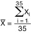
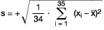

- 0.
Vorbemerkungen
Die zuständigen Behörden der Länder prüfen mit einem geeigneten statistischen Stichprobenverfahren nach den anerkannten Regeln der Technik, wobei das Stichprobenverfahren in seiner Wirksamkeit mit der in der Richtlinie 75/107/EWG in Anhang II beschriebenen Bezugsmethode vergleichbar ist.
- 1.
Entnahme der Zufallsstichprobe
Es wird eine Stichprobe von 35 Maßbehältnissen zufallsmäßig aus einem Los entnommen, das einer Stundenproduktion von Flaschen desselben Musters aus derselben Herstellung entspricht und bei importierten Flaschen durch die Anzahl der gleichbeschaffenen Flaschen einer Lieferung oder, falls die Zugehörigkeit zu einer Lieferung nicht festgestellt werden kann, durch den Lagerbestand bestimmt ist.
- 2.
Messung des Volumens der Flaschen der Stichprobe
Die Flaschen werden leer gewogen. Sie werden mit Wasser von bekannter Dichte bei einer Temperatur von 20 °C randvoll oder bis zur Höhe des angegebenen Abstandes von der oberen Randebene gefüllt. Sie werden gefüllt gewogen.
Die Messunsicherheit der Bestimmung des Volumens darf höchstens ein Fünftel der nach § 36 Absatz 2 zulässigen Abweichungen für das Nennvolumen der Flaschen betragen.
- 3.
Auswertung der Ergebnisse
- a)
Zu berechnen sind der Mittelwert x̄ der gemessenen Volumen xi der Flaschen der Stichprobe, die Standardabweichung s der gemessenen Volumen xi der Flaschen der Stichprobe.
- b)
Es werden folgende Grenzwerte berechnet:
obere Toleranzgrenze To als Summe aus dem Randvollvolumen oder dem durch die angegebene Entfernung begrenzten Volumen und der zugehörigen Abweichung nach § 36 Absatz 2 oder 3,
untere Toleranzgrenze Tu als Differenz aus dem Randvollvolumen oder dem durch die angegebene Entfernung begrenzten Volumen und der zugehörigen Abweichung nach § 36 Absatz 2 oder 3.
- c)
Annahmekriterien
Das Los genügt den Vorschriften des § 35 Absatz 2 oder 3, wenn die Werte x̄ und s gleichzeitig folgende drei Ungleichungen erfüllen:
x̄ + k · s ≤ To
x̄ – k · s ≥ Tu
s ≤ F (To – Tu)
mit k = 1,57 und F = 0,266
- d)
Berechnung der Werte
x̄ und s
| Der Mittelwert der Stichprobe ist: |  |
Die Standardabweichung der Stichprobe ist:

Wenn das Kontrollergebnis zu Beanstandungen führt, kann eine zweite Prüfung durchgeführt werden. Die Stichprobe ist dann aus einem Los zu entnehmen, das einer längeren Produktionsdauer entspricht, oder es sind die Eintragungen auf geeigneten Kontrollkarten oder in geeigneten Kontrollaufzeichnungen des Herstellers zu berücksichtigen, wenn dessen Betrieb von den zuständigen Behörden kontrolliert worden ist.